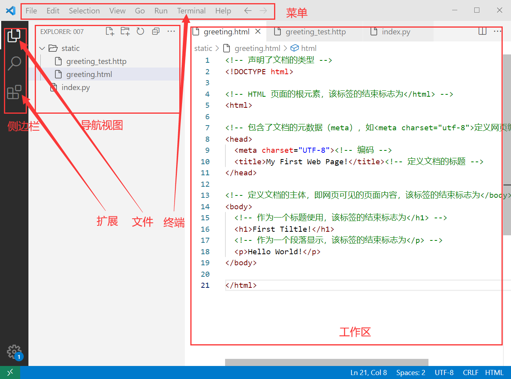

前端开发环境搭建
1 实验类型
验证型，2学时，必选实验
2 实验目的
建立前端开发环境；熟悉代码编写工具常见功能；熟悉浏览器使用常见功能；熟悉前代码调试基本过程
3 实验要求
验证参考代码；修改参考代码，实现自己的设计；将关键结果截图及源代码整理成实验报告
报告以Word格式编写，以学号作为文件名，如：
86263008_实验1.1.docx实验报告至少应用包含：关键步骤截图、源代码
后续实验中，若无特殊说明，实验报告中均按此要求编写
4 实验环境
Windows 7+、浏览器（推荐Microsoft Edge/Chrome/Firefox等）、Visual Studio Code(VS Code)、REST Client等扩展
5 约定
正文中会使用{变量名}语法（类似Python格式化字符串）来表示变化内容，如：张三同学的学号为86263008，引用变量{学号}实际替换为86263008。
6 实验步骤
建立工作目录
为实验创建工作目录：{盘符}:/{学号}/{实验编号}，如：C:/86263008/exp1_1，后续文件均存放在工作目录，每个实验单独存放。
安装VS Code
安装文本编辑器VS Code，步骤如下：
-
下载VS Code
在官网下载https://code.visualstudio.com/
或在课程群文件中下载
-
启动安装向导
安装过程中选中
将vscode加入文件夹右键，便于在文件夹中右键打开目录若未选中此选项，则无法在文件夹中右键打开目录
创建Hello World!页面
使用Html语法创建一个简单的Hello World!页面，输出Hello World!，步骤如下：
-
在资源管理器中打开工作目录
-
在VS Code中打开工作目录
在目录内空白处右键打开快捷菜单，选择
通过Code打开，界面布局如下：
主要功能模块如下：
模块 功能 浏览器视图(Explorer) 以树状图显示目录结构，类似于Windows资源管理器，选中代码文件时，可以在编辑器中打开 终端(Terminal) 在VS Code内打开命令行窗口，方便CMD命令 扩展视图(Extensions) 管理扩展（插件） -
安装扩展
在
扩展视图中搜索并安装以下扩展扩展名 功能 Open Browser Preview 为html文件添加右键菜单，打开默认浏览器 REST Client 用于测试RESTful接口 -
修改终端默认类型为CMD
在菜单
View/Command Pallete...中输入Terminal:Select Default Profile回车后在弹出菜单中选择Command Prompt -
创建代码目录
在
浏览器视图中创建front_end文件夹 -
创建Hello World!页面
创建页面：
front_end/greeting.html，参考代码如下： -
验证
-
方法1：在
浏览器视图中右键front_end/greeting.html，选中快捷菜单Preview In Defalut Browser并在浏览器中观察页面显示情况 -
方法2：打开网页浏览器，在资源管理器"将
front_end/greeting.html文件拖到浏览器中，在浏览器中观察页面显示情况此处浏览器指网页浏览器，而不是浏览器视图，上下文中注意区分，后文不再赘述
-
测试开发者工具
熟悉浏览器内置的开发者工具，步骤如下：
-
打开开发者工具
在浏览器中打开（快捷键F12或在菜单中）开发者工具，熟悉各选项卡中的界面，留意与
greeting.html页面相关内容注：最常用的几个选项卡有：Element，Source，Network等
-
熟悉Network选项卡
切换到开发者工具的
Network选项卡，选中greeting.html观察标头等选项卡中与Http相关的各选项
拓展练习
-
将输出字符串
Hello World!改为Hello Web！并在浏览器中测试 -
浏览器开发者工具中有那些常见的选项卡？有哪些功能？
-
从开发者工具相关的选项卡中找出
greeting.html的页面的加载时间、大小等信息 -
在
Element选项卡中修改greeting.html的body的背景颜色 -
在
Element选项卡中修改Hello Web!为Hello Web Online!